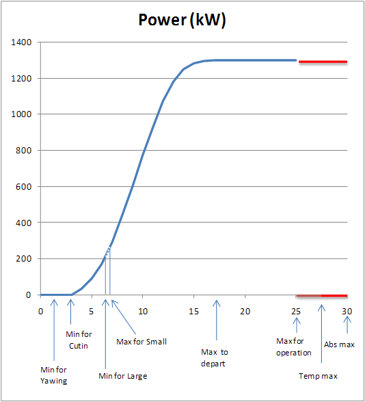

|
Min for yawing |
Vent au-dessous duquel l'éolienne ne s'oriente pas automatiquement dans la direction du vent |
|
Min for cutin |
Vent au-dessous duquel la Wind Turbine n'essaiera pas de démarrer. |
|
Min for Large |
Si l'éolienne est connectée en mode Grand (4 pôles) et que la vitesse du vent diminue, elle essaiera de passer en mode Smallmode (6 pôles) uniquement si la vitesse du vent descend en dessous de cette valeur pendant un minimum de temps. |
|
Max for Small |
Si l'éolienne est connectée en mode Petit (6 pôles) et que le vent augmente, elle essaiera de passer en mode Grand (4 pôles) uniquement si la vitesse du vent dépasse cette valeur pendant un minimum de temps. |
|
Max to depart |
Si l'éolienne est inactive ou arrêtée et que la vitesse du vent est supérieure à cette valeur, elle ne démarrera aucune opération de cutin. Ceci est un paramètre associé à la place de l'éolienne est installée. Ce comportement est d'éviter les opérations de démarrage quand il y a de fortes indications que la vitesse du vent va augmenter au-dessus du 'Max pour Opeation', en peu de temps, et donc il fera une arrètée. De cette façon, les opérations de démarrage et d'arrêt sont minimisées, avec des vents violents, qui créent des contraintes dans l'éolienne, mais sans une production importante (en raison du peu de temps qui resterait dans la production) |
|
Max for Operation |
Vitesse maximale du vent pour rester en production. Si le vent est égal ou dépasse cette vitesse pendant un certain intervalle, le Contrôleur initiera une opération d'arrêt. Un exemple typique de ces valeurs est de 25 m / s pendant 5 minutes. |
|
Temp max |
Cette vitesse est une limite supérieure à 'Max for Operation', mais la limite de temps est plus petite. Un exemple typique de ces valeurs est de 28 m / s pendant 100 secondes. |
|
Abs max |
La vitesse du vent plus élevée à laquelle l'éolienne commencera une déconnexion immédiate du réseau, s'arrêtera. Typiquement 30 m / s |